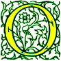

Signs for technical/specialized vocabulary
David Bar-Tzur
Links updated monthly with the help of LinkAlarm.

Optical bench; the moons of Saturn in orbit.1
EXPLANATION OF THE GLOSSING SYSTEM
(to understand how I describe the signs in this dictionary).
For content knowledge of how to use the physics terms in context, see Guided tutorial in physics for interpreters.
For negotiating and developing temporary signs, see Preparation and sign negotiation
For vocabulary lists to determine helpful signs for a specific discipline, see Vocabulary lists by topic.
- oath
- (2h)[B], DH held on Bible and NDH held up in oath. For a QuickTime movie of this sign, see ASL browser - inauguration.
- Obadiah [Heb. Ovadiah]
- O-B-A-D.
- obeisance
- (2h)[B], POs away, torso and hands bow down to direct object.
- obese
- (1) FT of [Y] alt. touch palm of [B], PO up. For a QuickTime movie of this sign, see ASL browser - obese. (2) (2h)[Y], POs > singer, FOs ><, are held at chest and separate.
- ob-gyn (pronounced "oh-bee-gee-why-en")
- O-B G-Y-N.
- object
- ~ (computers)
- O-B-J.
- ~ (linguistics)
- "O".
- ~ (v, criminal justice)
- (1) COMPLAIN. For a QuickTime movie of this sign, see ASL browser - object. (2) DISAGREE while mouthing "po".
- objective
- ~ (n)
- GOAL. For a QuickTime movie of this sign, see ASL browser - objective.
- ~ (adj)
- OPINION, SET-ASIDE.
- objective lens
- O-B-J L-E-N-S.
- oblateness
- SPHERE (2h)5:-CL'compress sphere'.
- oblation
- ~ (general)
- (2h)[B], POs up, are lifted up to God.
- ~ (Roman Catholic)
- BREAD, WINE, + (2h)[B], POs up, are lifted up to God.
- oblique
- ~ (1a. neither perpendicular nor parallel to a given line; slanting; sloping.)
- LINE, that is, I-OPPOSITE, but produced at an angle.
- ~ (1b. neither perpendicular nor parallel to a given surface; slanting; sloping.)
- FLOOR, but produced at an angle.
- ~ (2. a solid not having the axis perpendicular to the plane of the base.)
- SHAPE + (2h)[B], POs ><, FOs up, slant to one side.
- ~ (3. diverging from a given straight line or course.)
- [1], PO > NDS, FO away, moves forward and then deflects to one side.
- ~ (4. not straight or direct, as a course.)
- STRAIGHT, NOT.
- ~ (5. indirectly stated or expressed; not straightforward: oblique remarks about the candidate's honesty.)
- FT of [1] touches palmar and then dorsal (back) side of [B], PO away, FO up.
- ~ (6. indirectly aimed at or reached, as ends or results; deviously achieved.)
- POINT, but produced so that DH at first moves off > DS and then arcs back and touches NDH FT. If devious is meant, stick tongue in side of cheek and look away.
- ~ (7. morally, ethically, or mentally wrong; underhand; perverse.)
- CHARACTER WARPED, that is, [C], FO up, circles and lands on NDS of chest + (2h)[B], DH PO > NDS, FO away, is held on top of NDH PO up, FO away, and DH folds fingers.
- ~ (8. Typography. (of a letter) slanting toward the right, as a form of sans-serif, gothic, or square-serif type.)
- LETTER + (2h)[B], POs ><, FOs up, slant to one side.
- ~ (9. Rhetoric. indirect: applied to discourse in which the original words of a speaker or writer are assimilated to the language of the reporter.)
- QUOTE COVER-UP, where the second sign is (2h)[B], DH PO down, FO away, moves > NDS and glances over the surface of NDH PO up, FO away.
- ~ (10. Anatomy. pertaining to muscles running obliquely in the body as opposed to those running transversely or longitudinally.)
- FT of [X] taps muscle + (2h)[B], POs ><, FOs away, descend slanted > NDS.
- ~ (11. Botany. having unequal sides, as a leaf.)
- SIDES ASYMMETRIC, that is, (2h)[B] runs palms down sides of torso + NOT + (2h)[Y], POs down, FOs away, hands move left and right, side by side.
- ~ (12. Grammar. noting or pertaining to any case of noun inflection except nominative and vocative: Latin genitive, dative, accusative, and ablative cases are said to be oblique.)
- O-B-L-I-Q-U-E.
- ~ (13. Drafting. designating a method of projection (oblique projection) in which a three-dimensional object is represented by a drawing (oblique drawing) in which the face, usually parallel to the picture plane, is represented in accurate or exact proportion, and all other faces are shown at any convenient angle other than 90°.)
- [V^], PO away, FO up, "looks" directly at [1], PO > DS, FO up, then swings around and looks at it from the DS.
- ~ (14. Military. at an angle of 45°: a verb used without object.)
- (2h)[B], POs ><, FOs up, slant to one side + FORTY-FIVE+ DEGREE.
- ~ (15. Military. to change direction obliquely: noun.)
- [1], PO > NDS, FO away, moves forward and then deflects to one side.
- observant (religious Jew)
- [A], PO > signer is beaten against heart. (< beating the heart while confessing a list of sins, which occurs several times during the Yom Kippur service.)
- observable universe
- UNIVERSE PART OBSERVE CAN, where OBSERVE is (2h)[V], POs down, FOs > thing observed.
- observation, observe
- (2h)[V], POs down, FOs > thing observed, LOOK"over time".
- obsessed, obsession, obsessive
- [1] touches temple and then changes to an [open 8] and touches the back of [5], PO down, while both move in circles together.
- obsolete
- (1) FINISH LONG-AGO. For a QuickTime movie of this sign, see ASL browser - obsolete (1). (2) OLD*. For a QuickTime movie of this sign, see ASL browser - obsolete (2).
- obstetrician
- (1) DOCTOR MAJOR BABY BORN, where the second sign is (2h)[B], POs ><, FOs away, DH travels on top of NDH while NDH remains still. (2) O-B.
- obtuse
- ANGLE GREATHER-THAN 90 DEGREE.
- occipital lobe(s)
- (1h) if singular (lobe), (2h) if plural (lobes), 5:-CL places FT against rear lobe(s).
- occipital lobe
- Tap back of head with FT of [5:].
- occipital region
- Tap back of head with FT of [X] + [5], PO > back of head, FO up, moves in a small circle at the back of the head.
- Occupational Safety and Health Administration
- O-S-H-A.
- occupy (space, physics)
- (2h)[5], POs down, FOs away, close suddenly into (2h)[S]. For a QuickTime movie of this sign, see ASL browser - occupy.
- oceanography
- SCIENCE MAJOR OCEAN. Where MAJOR is (2h)[B], POs ><, FOs away, DH is placed on top of NDH asnd moves away while still in contact with it.
- octagon
- EIGHT (2h)1-CL'draw octagon'. For a QuickTime movie of this sign, see ASL browser - octagon.
- octal
- BASE is signed and without moving NDH, EIGHT is signed below it. For a QuickTime movie of this sign, see ASL browser - octal.
- octopus
- (1) NDH [O^] is placed on top of [5] which wiggles its tentacles. For a QuickTime movie of this sign, see ASL browser - octopus. (2) DH [O^] is placed on top of NDH [O^], both hands descend while NDH "legs" open, both hands move > DS, and repeat. For a movie of this sign, see Dictionary of Sign (ASL) - octopus.
- o.d. (overdose)
- (1) [O] is held in neutral space, then arm extends and HS changes to [D], FO away. (2) O-D. For a QuickTime movie of this sign, see ASL browser - overdose.
- odd
- O-D-D.
- odometer
- (2h)[1], point FTs at each other and DH spins around NDH.
- odor
- (1) SMELL BAD. (2) SMELL with a negative face.
- off air recording
- O-A-R.
- offense
- ~ (against God)
- SIN.
- (sports), offensive (player)
- (1) "O". (2) O-PROTECT, that is, (2h)[O], cross at wrists and push forward slightly twice. (3) DH [O], NDH [B], cross at wrists and DH taps twice at wrist of NDH. (4) O-WORK.
- offer, offering
- ~ (animal or spiritual)
- (1) (2h)[B], POs up, are lifted up to God. (2) (2h)[B], POs down, are supinated and lifted up to God. (3) (2h)[S], POs up, are lifted up to God while opening to (2h)[B].
- ~ (money)
- COLLECT MONEY.
- ~ (Roman Catholic)
- BREAD, WINE, AND MONEY WE RECENTLY COLLECT.
- Office of the Keys (Lutheran)
- (1) SAVE SIN. (2) EXCUSE SIN.
- official
- ~ (adj)
- [5], PO > NDS, FO up, brushes up middle of chest while circling perpendicular to it.
- ~ (referee)
- (1) [V:] is held to mouth like a whistle and taps twice. (2) JUDGE.
- offline
- (1) OFF LINE, where the first sign is, (2h)[B], POs down, FOs away, DH touches top of NDH then moves > DS while supinating. (2) O-F-F LINE.
- offsides (back court, Basketball)
- [B] moves from side to side while pronating and supinating (changing PO up and down) multiple times.
- offspring
- CHILDREN.
- off stage
- ~ (command)
- [1], PO away, FO up, moves away as if going off stage.
- ~ (location)
- O-F-F STAGE.
- off the record
- DON'T PUT-DOWN.
- ohm
- (1) [bC], PO down, shows shape of uppercase omega (). (2) Draw the shape of uppercase omega in the air.
- ohmmeter
- [bC], PO down, FO away, circles horizontally + METER.
- Ohm's Law
- (1) UPPERCASE-OMEGA 'S THEORY. (2) UPPERCASE-OMEGA POSS. THEORY.
- oil (crude)
- Thumb of [Y] is inserted twice into a slightly open [S], PO > DS, FO away.
- ointment
- MEDICINE + one hand rubbing the back of the other hand, as if spreading ointment. For a QuickTime movie of this sign, see ASL browser - ointment.
- OJT
- ON #JOB TRAIN.
- Olbers' paradox
- O-L-B-E-R-'S LOGIC CONFLICT.
- Old Testament
- OLD T-LAW. For an animated gif of this sign, see Animated dictionary of religious signs - Deaf Missions: Old Testament.
- oligopoly
- FEW* SELLER.
- olympic, Olympics
- (2h)[F] link, twist, and link again while moving > DS. For a QuickTime movie of this sign, see ASL browser - olympic.
- Oman (سلطنة عمان)
- [5], PO > signer, FO > NDS, puts thumb under chin. For a film of this sign, click on Oman - اسلطنة عمان.
- omega
- lowercase ~,
- [W:], PO away from signer, FO up.
- uppercase,
- [bC], PO down, held so that the omega shape is seen clearly.
- omega baryon (-)
- Draw an uppercase omega in the air + NEGATIVE"superscripted".
- omega resonance baryon ()
- Draw an uppercase omega in the air + R-E-S-O-N-A-N-C-E.
- omega resonance meson ()
- [W:], PO away from signer, FO up + R-E-S-O-N-A-N-C-E.
- omnipotent
- (1) ALL STRONG. (2) ALL POWER. (3) MOST POWER. For a QuickTime movie of this sign, see ASL browser - omnipotent.
- omnipresent
- (1) ALL HERE.(2) EVERY PLACE.
- omniscient
- (1) KNOW ALL THING. (2) KNOW EVERYTHING.
- Oneg Shabbat
- SABBATH PARTY.
- one-on-one
- ONE-ON-ONE, that is, (2h)[1], POs ><, FOs up, hands alt. ascend and descend.
- 1-3-1 (basketball)
- Sign ONE THREE ONE, PO away, while moving hand > signer.
- one time programmable
- O-T-P.
- one-to-one
- ONE-ON-ONE, that is, (2h)[1], POs ><, FOs up, hands alt. ascend and descend.
- online
- ON LINE.
- on stage
- ~ (command)
- [1], PO > signer, FO up, moves > signer as if coming on stage.
- ~ (location)
- ON STAGE.
- on the job training
- (1) O-J-T. (2) ON #JOB TRAIN.
- onto (function)
- ON.
- Oort cloud
- O-O-R-T + 5:wg-GROUP.
- opacity
- RADIATION PREVENT, where the first sign is NDH [S], PO down, FO > DS, DH [5] is held over NDH and wiggles while rising to show radiation.
- opaque
- DH [V], PO down, FO away, moves towards NDH [B], PO towards, FO > DS, and the DH FT strike the palm as if the person's sight wanted to penetrate, but couldn't.
- opaque projector
- DH [V], PO down, FO away, moves towards NDH [B], PO towards, FO > DS, and the DH FT strike the palm as if the person's sight wanted to penetrate, but couldn't + [O^], PO forward, opens to [5] as it moves forward.
- open
- ~ (an object)
- ~ (general)
- (2h)[Bb], POs down, FOs away, are held so that the index fingersides touch, then supinate at wrists so that POs are up and the hand separate. As you can see below, this sign is very dependent on what the physical act of opening looks like. Try to visualize what the opening process looks like for what you are trying to express in ASL.
- ~ (a book)
- (2h)[B], are pressed together like a closed book, and then open while twisting.
- ~ (a cabinet)
- (2h)[5:] swing open cabinet doors while closing to (2h)[S].
- ~ (a can)
- NDH [C], PO > DS, FO away, represents can and [bX] twists can-opener around edge.
- ~ (a car door)
- [A dot] holds onto door handle and swings door out.
- ~ (a door)
- (2h)[Bb], POs away, FOs away, are held side by side and DH swings door open.
- ~ (a drawer)
- (1h) or (2h)[5:] pull(s) out drawer, and HS closes to [S]. (1h) or (2h) depends on size.
- ~ (a jar)
- NDH [C], PO > DS, FO away, represents jar and [5:] unscrews lid.
- ~ (a laptop)
- (2h)[B], POs down, FOs ><, DH is held on top of NDH and twists open top.
- ~ (an oven)
- (2h)[S], POs up, FOs away, pull oven door > signer and down.
- ~ (a play)
- START. "Close (a play)" is LAST.
- ~ (a purse)
- (2h)[A], are held together and separate as if opening purse.
- ~ (a wallet)
- (2h)[B], Fos away, are held together and hine open at FTs.
- ~ (a window)
- (2h)[Bb], POs > signer, FOs ><, DH is held on top of NDH and DH ascends.
- ~ (one's eyes)
- (2h)[closed G] are held at respective sides of closed eyes and open to (2h)[L] with signer's eyes opening.
- ~ (one's heart)
- (2h)[B] touch FTs to heart and hinge outwards.
- ~ (one's mouth)
- (2h)[closed G] are held at respective sides of closed mouth and open to (2h)[L] with signer's mouth opening.
- ~ (one's mind)
- (2h)[B] touch FTs to middle of forehead and hinge outwards.
- ~ (the curtains)
- (2h)[4], POs away, FOs up, are held side by side and then separate like opening curtains.
- ~ (the hood of a car)
- (2h)[S], POs down, FOs away, pull up hood.
- ~ (stage position)
- (1) [1], PO away, FO up, supinates PO to face signer. (2) (2h)[B], FOs away, are held at their respective sides and move diagonally away.
- open captioned, open captioning
- OPEN CAPTIONED.
- open circuit
- OPEN + (2h)I-CL'POs towards, FOs ><, pinkies touch and draw
rectangle.
- open collector
- O-C.
- open interval
- INTERVAL OPEN.
- Open Software Foundation
- O-S-F.
- open star cluster
- OPEN STAR GROUP-TOGETHER'loosely'.
- open systems interconnect
- O-S-I.
- opening (first show)
- OPEN (general).
- operant conditioning
- O-C.
- operate, operation
- ~ (on a function, Math)
- CALCULATE.
- ~ (on a person, Health Science)
- [A dot] runs FT down palm of [B], PO away, FO up, or on the specific area of the body that is, undergoing an operation. For a QuickTime movie of this sign, see ASL browser - operate.
- ~ (run a device)
- (2h)[B], NDPO down, DHPO up; DH rubs across ND palm and towards the DS.
- operating room, O R
- O-R.
- operating system (computers)
- "O" "S".
- operation
- ~ (computers)
- O-P.
- ~ (math)
- CALCULATE.
- ~ (health science)
- [A dot] runs FT down palm of [B], PO away, FO up, or on the specific area of the body that is, undergoing an operation. For a QuickTime movie of this sign, see ASL browser - operate.
- operational amplifier
- O-P A-M-P.
- operations engineer
- CONTROL ENGINEERING AGENT.
- operator
- ~ (equipment)
- (2h)[B], NDPO down, DHPO up; DH rubs across ND palm and towards the DS + AGENT.
- ~ (math)
- "O".
- ~ (telephone)
- [L:] hold thumb to ear and index finger to mouth.
- opinion
- [O], PO away, FO up, circles DS temple.
- opium
- O-P-I-U-M.
- opossum
- ANIMAL + [X] slides along [1] FO away. For a QuickTime movie of this sign, see ASL browser - opossum.
- opponent (sports or general)
- ENEMY.
- opposite side (of a triangle)
- "O".
- oppress
- DH [B] presses down on [S], PO > signer, FO > DS, until NDH tips over and has PO up.
- optical
- Thumb of [3] is held at eye and index and middle fingers wiggle.
- optical character recognition
- O-C-R.
- optical quality
- (2h)SEE Q-U-A-L-I-T-Y.
- optical telescope
- REGULAR TELESCOPE, that is (2h)[1], POs ><, FOs away, DH moves in a circle parallel to the chest and strikes the NDH as it passes and the non-manual signal is mm + (2h)[C], hold telescope and focus it, DH closer to signer. For a QuickTime movie of the first sign, see ASL browser - regular and for a QuickTime movie of the second sign, see ASL browser - telescope.
- optical time domain reflectrometry
- O-T-D-R.
- optics
- O-P-T-I-C-S.
- option
- CHOOSE.
- optional (dive)
- VOLUNTEER.
- optimal
- BEST POSSIBLE.
- -or (suffix)
- ~ (machine)
- Change the verb to a noun (usually by doubling the motion) as in "printer" = PRINT+.
- ~ (person)
- AGENT, that is, (2h)[B], POs ><, FOs away, both hands moved down.
- oral culture
- [X] scrapes FT against inside of cheek + ANALYZE.
- oral deaf (person)
- (1) [V:], PO > signer, circles mouth. (2) [O], PO > NDS, circles mouth.
- oral-genital sex ("69")
- (1) SIXTY-NINE. (2) (2h)[V], DHPO down, DHFO > NDS and NDH the exact opposite, DH taps on NDH several times.
- oral region (classifiers)
- (1) Open mouth and index areas for a front view. (2) Turn head, trace region, and place 5:-CL on lower cheek to index inner parts for a lateral view.
- oralism
- (1) SUPPORT + [V:], PO > signer, circles mouth. (2) SUPPORT + [O], PO > NDS, circles mouth.
- oral region
- MOUTH + [5], PO > mouth, FO up, moves in a small circle at the mouth.
- oral sex
- ~ (general, fellatio or cunnilingus)
- (1) Shift lf and produce the sign for "cunnilingus", then shift rt and produce the sign for "fellatio". See entries for "cunnilingus" and "fellatio". (2) O-R-A-L SEX (see "sex" for various options).
- ~ (if cunnilingus is meant)
- (1) (2h)[L], PO away, touch FTs, and move in a circle against the extended tongue. (2) (2h)[L], PO away, touch FTs, then with NDH held in place, DH [H] licks up the index finger.
- ~ (if fellatio is meant)
- (1) [5^] strokes NDH [1] or [H] from root to tip repeatedly. (2) (1h) or (2h)[S] move(s) as if pulling the penis into the mouth. Tongue may push out ND cheek.
- orbit
- [1^], PO down, FO away, circles NDH [A], PO > DS, FO away, from above.
- orbital
- ~ (singular)
- NDH [bC], PO > DS, FO away, DH [1] traces the path of the orbital from above.
- ~s (plural)
- NDH [bC], PO > DS, FO away, DH [1] traces the path of the orbital from above + (2h)[bC], PO > DS, FO away, move away in upward arcs to show the relative positions of the orbitals.
- orbital region (anatomy)
- EYE + [5], PO > eye, FO up, moves in a small circle at the eye.
- orbital velocity
- ORBIT "V". ORBIT is [1^], PO down, FO away, circles NDH [A], PO > DS, FO away, from above.
- orbiting satellite carrying amateur radio
- O-S-C-A-R.
- orchard
- (1) FOREST, that is, TREE is produced while moving > DS. For a QuickTime movie of this sign, see ASL browser - orchard. (2) FS or sign the kind of fruit if known + FOREST, that is, TREE is produced while moving > DS. For a QuickTime movie of FOREST, see ASL browser - orchard. Could use FRUIT if the kind of orchard is unknown.
- orchestra
- (1) FT of (2h)[1] moves as if conducting an orchestra. For a QuickTime movie of this sign, see ASL browser - orchestra. Note that the movie includes AGENT, which I believe is a mistake. To distinguish this from "(music) band", one could add FANCY to the beginning. (2) (1) + GROUP.
- ordain (a religious leader)
- [B] touches temple and then NDH [B], PO down. For a QuickTime movie of this sign, see ASL browser - ordain.To certify (usually with an attendant ceremony) that a person has finished their religious instruction and is now able to act as a religious leader.
- ordeal
- EXPERIENCE AWFUL*.
- order
- ~ (proper place)
- (2h)[B], POs ><, FOs away, both hands move > DS in upward arcs.
- ~ (religious)
- (RELIGION) O-GROUP.
- order of protection
- ORDER DEFEND.
- order to show cause
- ORDER SHOW REASON.
- ordered pair
- O-R-D-E-R-E-D PAIR. Note: To demonstrate specific ordered pair, for example (3, 2) - THREE COMMA TWO, (2h)bC-CL'parentheses around 3,2'.
- ordinance
- (criminal justice)
- CITY LAW. For a QuickTime movie of this sign, see ASL browser - ordinance.
- ~ (religion)
- LAW.
- ordinate (y-coordinate)
- (1) O-R-D-I-N-A-T-E. (2) "Y"
C-O-O-R-D.
- ordination
- [B] touches temple and then NDH [B], PO down + CELEBRATE.
- organ (health science)
- O-R-G-A-N, or sign specific organ, such as LUNG, if known.
- organ donation
- DIE, O-R-G-A-N GIFT-TO.
- organic
- O-R-G.
- organism
- LIVE THING.
- organization
- ~ (the process of being organized)
- PLAN(n), that is, (2h)[B], POs ><, FOs away, both hands move > DS, in upward arcs.
- ~ (an organized group)
- O-GROUP.
- orgasm
- (1) (2h)[S], hold palms against chest then move suddenly up the chest while opening to (2h)[5] and with appropriate facial expression. (2) (2h)[3] hold thumbs against upper torso and travel down chest while wiggling. (3) [3] holds thumb against tip of nose and curl FT once while head jerks > DS. (4) EXCITED + [S], PO > NDS, FO up, punches palm of NDH [B], PO down, FO > DS, from below. (5) THINK + [S], PO > NDS, FO up, punches palm of NDH [B], PO down, FO > DS, from below.
- orgy
- The base sign is (2h)[V], POs ><, FOs away, DH bounces on top of NDH, which is repeatedly produced while the arms circle in a horizontal plane.
- orientation
- (1, know where one is) O-SITUATION. For a QuickTime movie of this sign, see ASL browser - orientation. (2, how one sees the world) TEND (POSS.), where the first sign is (2h)[open 8], touch FT to touch and move away while mouthing "pi" (that's pronounced "pee" not "pie"). (3, training to understand what is involved in a setting) EXPOSE, that is, DH [O^], is held close to NDH [1], PO > DS, FO up, and DH opens to a [5^].
- orientation and mobility
- (1) O-SITUATION AND + [M] moves forward in wavy motion as in the sign TRAVEL. For a QuickTime movie of the first sign, see ASL browser - orientation.(2) "O" AND "M".
- oriented
- [5], PO down, circles above [1], PO) away, FO up + (2h)alt.KNOW.
- origin
- ~ (2D)
- FT of [1] twists at the backhand joint between the thumb and index finger of [L].
- ~ (3D)
- INDEX'twists like BEGIN at root of thumb'
3D-CL------------------------------->,
that is, FT of [1] twists at the backhand joint between the thumb and index finger of 3D-CL.
- ~ (of a thing)
- START WHERE?
- ~ (one dimension)
- O-R-I-G-I-N. Note: Avoid START: it's a verb, not a noun.
- original
- VERY-FIRST, that is, [1], PO down, FO away, supinates like the sign FIRST, but strikes the thumb of NDH [A dot], PO > DS, FO away.
- original equipment manufacturer
- O-E-M.
- ornament
- (1) (2h)[O^], POs away, FOs up, alt. twist as they decorate things in space. (2) There is a fascinating sign at ASL browser that I can't begin to describe, but to see it, go to ASL browser - ornament.
- orphan
- NONE MOTHER FATHER. For a QuickTime movie of this sign, see ASL browser - orphan.
- Orthodox
- ~ (Christian)
- O-NICE. For a QuickTime movie of this sign, see ASL browser - Orthodox.
- ~ (Jewish)
- (1) STRICT. (2) O-NICE. (3) F-NICE. (< (Yid.) "frum", religious.)
For a QuickTime movie of this sign, see ASL browser - Orthodox. (4) "O". (5) [A], PO > signer is beaten against heart.
- orthographic projection
- O-P.
- orthography
- (2h)[1] cross at midfinger and wg while moving together > DS + SYSTEM.
- orthopedics
- O-R-T-H-O.
- oscillate
- MOVE'quickly side to side'.
- oscillating universe theory
- UNIVERSE EXPAND~CONTRACT THEORY, where the second sign is DH [S] is held inside of NDH [C], FOs away. Hands separate while opening into (2h)[5:] and cheeks are puffed out, then return to their original position.
- oscillator
- "O".
- oscilloscope
- NDH [C], PO > DS, acts as the screen of the ~ and DH [1] draws a wavy line within the screen.
- osmium
- O-S. For more information on this and other elements, see The elements. And for fun, see Elements by Tom Lehrer. To see this song with captions, go to The Elements song by Tom Lehrer.
- ounce
- #OZ. This is spelled but with the "Z" descending in an exaggerated fashion.
- out
- out (admit something one was hiding, especially homosexuality)
- (1) DH [1:] curled around thumb of [C], PO > DS, is removed with lips full (mm). (2) DH [V:] curled around thumb of [C], PO > DS, is removed with lips full (mm). (3) O-U-T.
- ~ (stage lighting)
- (2h)[5^], POs down, FOs away, descend from above and close to (2h)[O^].
- outer ear
- OUT EAR.
- outer space
- BEYOND (MORE-THAN) EARTH, where the first sign is (2h)[B^], touch FTs, then DH moves up in an arc towards the signer and away. For a QuickTime movie of this sign, see ASL browser - more than.
- outgassing
- G-A-S + DH [5wg] touches [B], PO down, and moves up as if gas were escaping from a surface with some difficulty.
- outlet (not electrical)
- (1) OUT+. (2) OUT+ but the DH moves forward from inside of the NDH [C], PO > DS.
- outline
- ~ (of a shape)
- [1], PO down, traces the outline of [B], PO > signer, FO up.
- ~ (of a written work)
- (1) SUMMARIZE. For a QuickTime movie of this sign, see ASL browser - outline. (2) SUMMARIZE LIST. (3) O-U-T-L-I-N-E.
- out of body experience
- (2h)[V] are held together like the sign SIT and the DH floats away.
- out of bounds (Basketball)
- OUTSIDE.
- out of phase
- (2h)B-CL'arc up and down out of synch'.
- out-of-position weliding
- O-O-P WELDING.
- out of round (cylinder, Automotive)
- O-O-R.
- out of the closet
- (1) DH [1:] curled around thumb of [C], PO > DS, is removed with lips full (mm). (2) DH [V:] curled around thumb of [C], PO > DS, is removed with lips full (mm). (3) O-U-T.
- out-patient
- (1) OUT + P-HOSPITAL, where the second sign is, [P] draws a cross on the upper arm. (2) FT of [O] is drawn across upper arm, and then [P] is brought down upper arm. (3) COMMUTE P-HOSPITAL, that is, (2h)[A], DH points FT at palm of NDH, whose PO > DS, FO away; DH nods at wrist to make the hand "commute" back and forth + [P] draws a cross on the upper arm. For a QuickTime movie of the P-HOSPITAL, see ASL browser - patient.
- output
- (1) OUT+. (2) OUT+ but the DH moves forward from inside of the NDH [C], PO > DS. Note: The NDH shows how the function takes a value into itself (the C-CL), and then outputs another value from itself (the C-CL).
- output impedance (Zo)
- Z O"subscripted".
- output voltage (Vout)
- V O-U-T"subscripted".
- outreach
- (1) (2h)alt.TAKE-UP"each", that is, each hand alt. is [5], PO down, FO away, and moves upwards while closing to [S) and both hands travel from NDS to DS. (2) OUT TOUCH. For a QuickTime movie of this sign, see ASL browser - outreach.
- outstanding check
- CHECK BECOME CASH, NOT-YET.
- outtake line
- DH [5^], PO away from singer, is held inside of NDH [C], PO > DS, FO up; DH closes and move out of NDH twice + with NDH held in place, DH [C] touches the little finger side of NDH and moves away, indicating a conduit.
- Ovadiah (Bible)
- O-B-A-D.
- ovaries
- (2h)F-CL, FOs down, are held against respective sides of pelvis.
- oven
- BAKE BOX, where the first sign is DH [B], PO up, FO away, puts an imaginary object into the oven, which is represented by NDH [B], PO down, FO > DS, held high above.
- over (as in "A over B")
- DIVIDE + [B], PO down, FO > DS, is held as fraction sign and DH places whatever expression should be in the "denominator" (under the ND palm). For "A over B" it would be: "A" DIVIDE + [B], PO down, FO > DS, is held as fraction sign and DH places "B" under the ND palm. This is not actually necessary for short expressions such as this, but it shows how longer expressions could be represented.
- overcharge (business)
- ACROSS COST. For a QuickTime movie of this sign, see ASL browser - overcharge.
- overcome (with the Spirit)
- (1) HOLY SPIRIT, OVERWHELMED. (2) HOLY SPIRIT, INSPIRED. (3) HOLY SPIRIT INVOLVE(D)-IN-SELF.
- overdose
- (1) [O] is held in neutral space, then arm extends and HS changes to [D], FO away. (2) O-D. For a QuickTime movie of this sign, see ASL browser - overdose.
- overdrive
- O-D.
- overflow
- [5], PO down, FO away, covers top of [S], PO > DS, FO away, and FT wiggle as the hand moves away, like a cup overflowing.
- overhang
- (2h)[Bb], POs down, DFO away, DH balances its elbow against the backhand of NDH, FO > DS.
- overhead
- ~ (business)
- O-H.
- ~ (projector)
- [O^], PO > over back, FO up, hands opens while moving > back. For a QuickTime movie of this sign, see ASL browser - overhead projector.
- ~ (transparency)
- (2h)[1], FOs away, trace the top and sides of a rectangle (but not the bottom) + [O^], PO > over back, FO up, hands opens while moving > back. For a QuickTime movie of the second sign, see ASL browser - overhead projector.
- overhead projector
- [O^], PO > over back, FO up, hands opens while moving > back. For a QuickTime movie of this sign, see ASL browser - overhead projector.
- overhead weld
- NDH [B] is held high above head PO down, FO away, and [L] welds the palm.
- overlap
- (2h)[B], DHPO up, NDHPO down, FOs away, DH pronates onto top of NDH. This can be done alt. for greater clarity. Note: This is similar to BUILD, but with different FOs.
- overlay
- (2h)[B], POs down, FOs away, DH moves onto NDH from far over on DS. Like ON, but from a greater distance.
- overruled (objection)
- NOT ACCEPT.
- overtime (sports and work)
- O-T.
- overtone (music)
- O-V-E-R-T-O-N-E.
- over voltage protection
- O-V-P.
- overweight
- (2h)[H], POs ><, cross FTs and push down twice like the motion of DEPEND.
- ovulate, ovulation
- (1) MENSTRUATE + [L], PO > signer, FO down, points thumb at left side of pelvis, then supinates and points at right side + EGG with single motion. (2) (2h)[S], are held at respective side of pelvis and flick out index fingers several times.
- ovum
- (1) EGG + point to DS ovary. (2) O-V-U-M.
- owe
- [1^], taps Ft against palm of [B], PO up, FO away.
- owl
- (2h)[O] twist while rubbing eyes. For a QuickTime movie of this sign, see ASL browser - owl.
- own
- ~ (adj, as in "his ~ car")
- #OWN, that is, [O], PO > signer, FO up, opens to a [5] and pronates to [N], in the regular fingerspelling position.
- ~ (v)
- (1) HAVE. (2) ACCEPT.
- owner
- (1) HAVE AGENT. (2) ACCEPT AGENT.
- owner's equity (income statement)
- "O" "E".
- oxidation (reaction)
- O-X.
- oxidation-reduction (reaction)
- R-E-D-O-X.
- oxidation state
- O-X SITUATION.
- oxidize
- OXYGEN CORRODE.
- oxygen
- ~ (as a free gas)
- "O" TWO'subscripted'. For a QuickTime movie of this sign, see ASL browser - oxygen. This is one of the "six diatomics" and when it's name is mentioned in a free state (which is a gas), the interpreter should sign this, rather than its chemical abbreviation.
- ~ (chemical abbreviation)
- "O". For more information on this and other elements, see The elements. And for fun, see Elements by Tom Lehrer. To see this song with captions, go to The Elements song by Tom Lehrer.
- ozone
- O THREE"subscripted" with its PO > signer.
Image credits
1. ClipArtConnection.com

Home